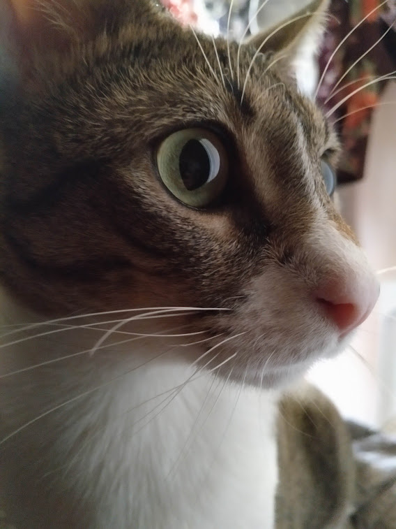

Un poco sobre mi:
Soy una persona a la que le apasinan los videojueos desde bien chiquito, Actualmente estoy estudiando programacion para algun dia trabajar en el sector. En mi GitHub hay una version de mi primer juego que hice como practica para la asignaura de gameEngines,esta hecho con el motor Unity, y se trata de un plataformas 2d un poco bastante dificil.
A su vez estoy trabajando en el Proyecto de final, se trata de un rogelike done manejas a un plantmante que puede extraer semillas de los enemigos derotados para plantarlas y consegir armas letales con las que poder deorrtar jefe final.
Me gustan los gatos, ya que tengo uno que aunque parezca una fiera en realidad es muy asustadizo y cariñoso.
